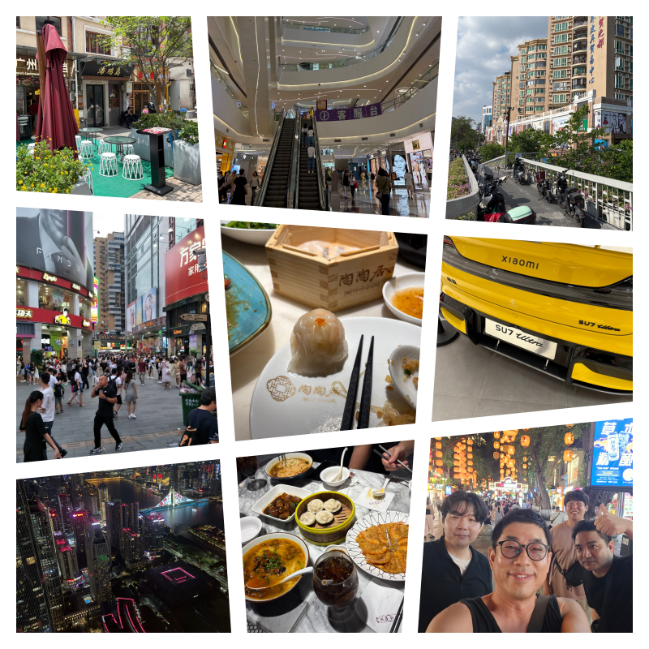
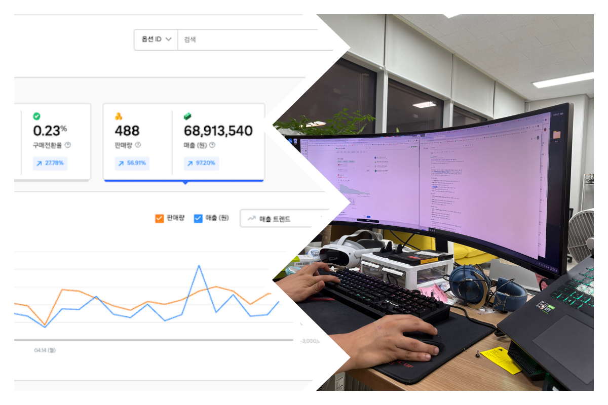

"혼자의 한계를 넘어서"

나는 늘 사람들의 흐름을 읽는 데 능했다. 세상은 언제나 변했고, 소비자들의 마음도 시시각각 달라졌다.
상품을 소싱하고 가격을 맞추며 트렌드를 재빨리 읽어내는 일은 내게 숨 쉬듯 자연스러웠다. 매출은 억 단위로 오르내렸고, 사람들은 나를 ‘천재적인 셀러’라고 부르기도 했다.
하지만 내 안에는 늘 갈증이 있었다. 아이디어와 전략은 무궁무진했지만, 시간이 없었다. 내 머릿속 구상은 산더미처럼 쌓였고, 두 손은 이미 포화 상태였다.
"상품을 등록하는 시간을 줄일 수 없을까요? 내가 찾고 싶은 상품을 딱 올려두면, 자동으로 쇼핑몰에 올라가는 식으로요."
처음 요청은 소박했다. 2주면 된다는 말에 가볍게 시작했지만, 현장은 늘 계획을 바꾼다. 일정은 길어졌지만, 서로 배우는 속도는 붙었다.

자동화 솔루션의 효과는 즉각적이었다. 단순 반복 업무가 줄어드니, 더 중요한 전략과 소싱에 집중할 수 있었다. 매출은 상승 곡선을 그렸고, 효율은 극대화되었다.
더 흥미로운 건, 이 도구가 단순한 '프로그램'이 아니라는 사실이었다. 의도치 않게 새로운 기능을 발견하기도 했고, 나만의 방식으로 응용하기도 했다.